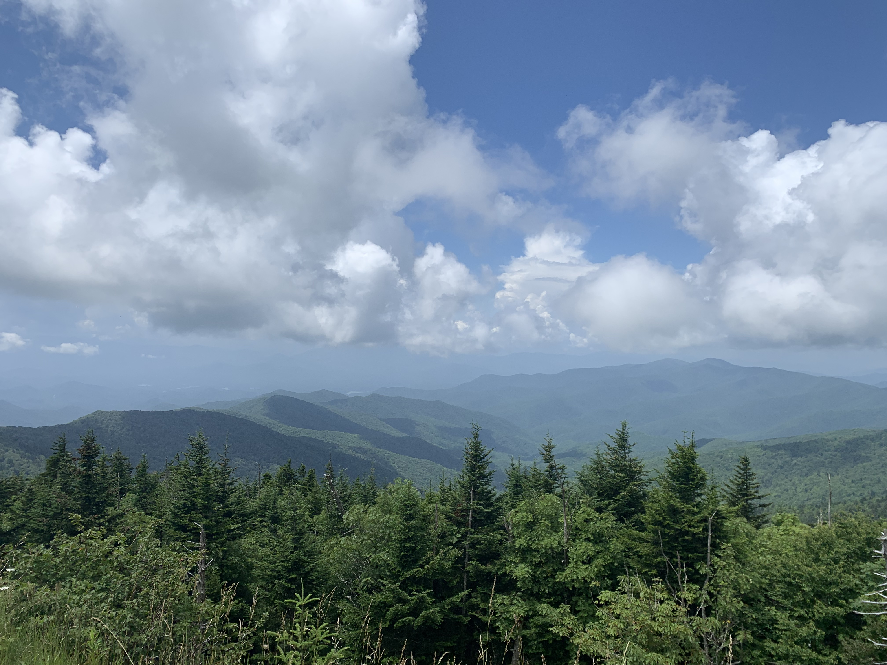
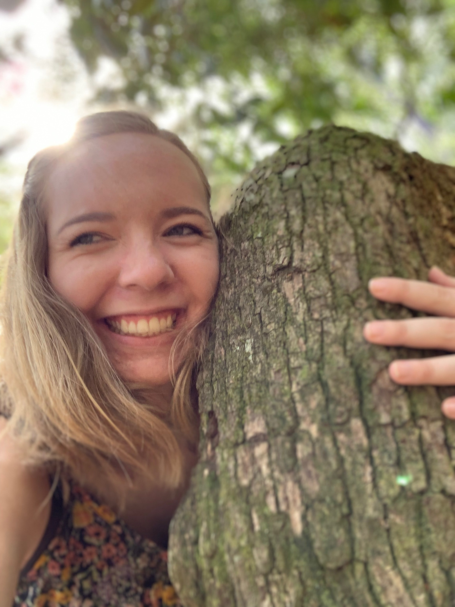

Drema Beavers
Drema Beavers
| University of Georgia |
| drb03845@uga.edu |

Smokey Mountains in March 2019
A little about me: I am a student at the Univeristy of Georgia. I am from Toccoa, Georgia. I really love what I am studying and hope to be able to do some good in the world. Some fun things that I enjoy are going on hikes, reading books, and catching up on my favority shows. The rest of this webpage is dedicated to some of my accomplishments and what they have taught me. Thanks for visiting!
Work Experience
Georgia Conference Center: Head Lifeguard
I supervised twenty employees.
In charge of running the waterfront including set up and take down everyday.
Managed up to 900 swimmers at a time.
Open Arms Clinic: Student Outreach Coordinator
School representative of Open Arms Clinic.
Recruited students to volunteer their time for the clinic.
Shadowed Doctors and Administrators.
VisionWorks:Organizational Assistant
Coordinated jobs with the Doctor when she was absent.
Kept the office organized and created a new filing system.
Leadership Experience
Through all of my leadership experiences, I have learned a lot:
One of the most valuable things I have learned is how to work in a group. You have to recognize everyone's strengths, delegate, and work together to get great outcomes.
I've also learned to listen to feedback and work on fixing things, even when I may not always agree. I learned how to manage different projects and manage time efficiently.
Delta Gamma
For the past year, I served as Director of Rituals.
This coming year I will serve as Vice President of Programming.
I also am currently a Delta Gamma Dialogues Facilitator.
Delta Gamma's motto is Do Good.
Visit the Delta Gamma website
ALL Georgia
For my sophomore year, I was a participant for ALL Georgia.
This year, I am on the inaugural Executive Board.
Visit the ALL Georgia Website
ECHO Lab
I have served as a Research Assistant for this past semester and plan to stay in this posistion.
We run calls, mentor-mentee mindfulness sessions, and are encouraged to do our own research
Visit the ECHO Research Lab's Website
Education
University of Georgia
Psychology and International Affairs Double Major.
Set to graduate in May of 2021.
Want to work in Human Rights, Constitutional, or Environmental Law.

Drema Beavers in March 2019